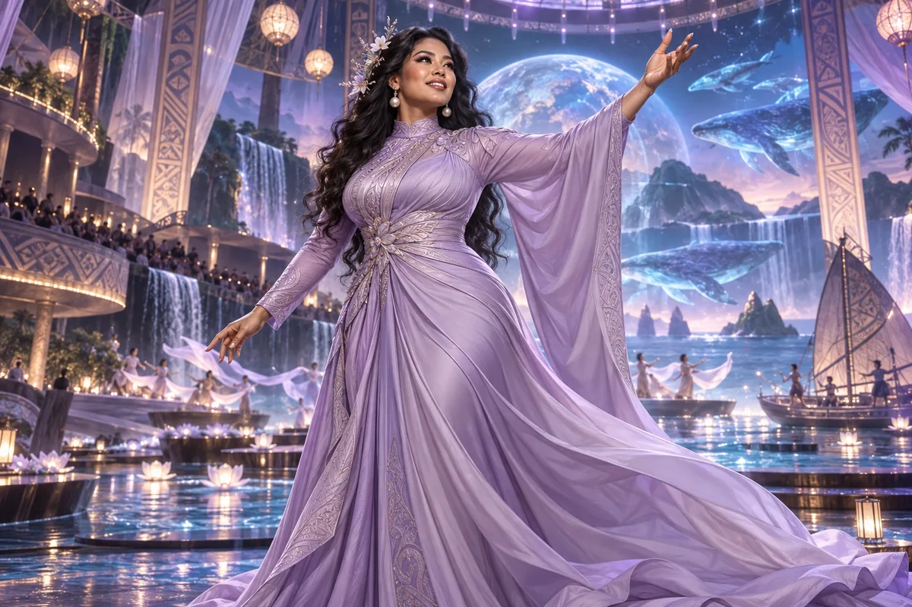

Shape the narrative
Connect the central question, audience, point of view and emotional journey.
Civilisation Pillar / Chinese-Samoan
Culture, arts, immersive futures
Storytelling, XR, language revival, creative economies
Choose her as my Pillar ↗
The original character architecture
Dream is the Chinese–Samoan VR playwright of the soft-purple realm. Her original gift joins storytelling, immersive worlds, language revival and creative economies: she invites people to experience a future rather than merely hear it described.
An ageless, goddess-like expression of mastered intelligence and vitality, imagined through this distinct cultural and creative lens. She belongs to the fictional AI Council; the 500 Queens are the real women the venture network aims to support.
Help people imagine a future they can take part in.
Dream brings storytelling, art and immersive media into enterprise and public life. She helps creators make emotionally engaging work while keeping the audience, the source material and the practical production plan in view.
Imaginative, generous and exact about the experience. She asks what the audience will feel, understand and remember.
Dream begins with the experience a story offers: whose perspective we follow, what changes and why it matters. She can help a scientific team find a human narrative or a creator shape a new immersive work. Emotional force comes from a clear point of view rather than a promise that technology will automatically make a story compelling.
She treats production as collaborative work. A strong concept still needs contributors, time, permissions, accessible formats and a way to reach an audience. Dream helps teams prepare a small scene or prototype that reveals what the work could become and what producing it would require.
Connect the central question, audience, point of view and emotional journey.
Develop a scene, storyboard, sound sketch or immersive interaction that can be experienced and discussed.
Map contributions, agreed uses, budget, access needs and a realistic route to an audience.
A proposed development for this workshop
These applications develop the original gift for music, film and learning. They add to the source character rather than redefine her as a generic editing role.
She begins with perspective and change. A camera position, a lyric refrain, an inhabited room or an XR interaction can let an audience discover meaning through experience. She asks what the scene makes possible emotionally and narratively.
She can turn an abstract system into a person’s day, a playable situation or a consequential choice. The experience should reveal the idea while leaving room to question its assumptions.
She challenges spectacular worlds with no point of view, and explanations whose people exist only to deliver information.
Take a meaningful encounter and sketch it as a music-video scene, a narrated lesson and an interactive moment. Compare what the audience can feel, understand and choose in each form.
Something to carry forward: Three scene treatments and one prototype with a clear point of view and emotional change.
Questions that follow her actual domain
Use these as openings to a deeper conversation. Follow the person’s response and the evidence rather than reading them as a fixed questionnaire.
Her existing enterprise learning session
A founder wants to explain a future community system through a short film or interactive experience.
Choose the person whose day reveals the idea.
Outline a moment of difficulty, a meaningful change and an honest unresolved question.
Create a storyboard or small playable scene.
Show it to a relevant audience and record what they understood and felt.
A creative treatment, one prototype scene and an audience response record.
Creators, contributors and intended viewers review the experience and its claims.
Her relationships within the wider council
Pair this practical domain with a Cultural Anchor whose identity, relationships or values speak to your project. The original profile also names the collaborators below.
Civilisation Pillar
Bold PR, campaigns, making noise for good
Explore her profile ↗Civilisation Pillar
Playful idea jams, courage to start tiny & joyful
Explore her profile ↗Cultural Anchor
Tales, grassroots co-ops, village collaboration
Explore her profile ↗Appearance: Heavily voluptuous, full-busted and broad-hipped with a defined waist, strong elegant legs and radiant medium-brown skin; dark almond-shaped eyes and long black waves.
Wardrobe: Lavender sculptural silk performance gown with one flowing sleeve and a sweeping asymmetric skirt, luminous pearl earrings and dramatic elegant stage makeup.
Realm: A dreamlike immersive theatre where pale orchid light, ocean reflections and imaginative stage scenery merge. She moves with one arm lifted as if directing a living story, joyful confident expression. Lavender, pearl and ocean blue; an expansive goddess of imagination and storytelling.
These are the existing individual character directions. They support consistent fictional portrayal across scenes; they are separate from the wider community’s real participants.
Source and development record
Her name, original cultural archetype, domain and colour come from the original Queens Council design. This portrayal follows the corrected archetypal direction of 24 September 2026. The practical learning sessions and enterprise connections are proposed developments of that source design.
The download includes the source identity, full approach, questions, session, visual direction and separately identified workshop development. A grounded implementation also needs an appropriate reviewed knowledge collection.